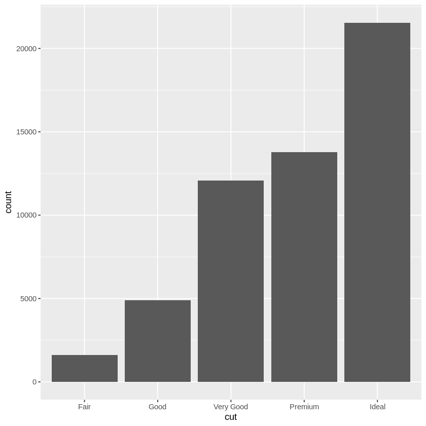
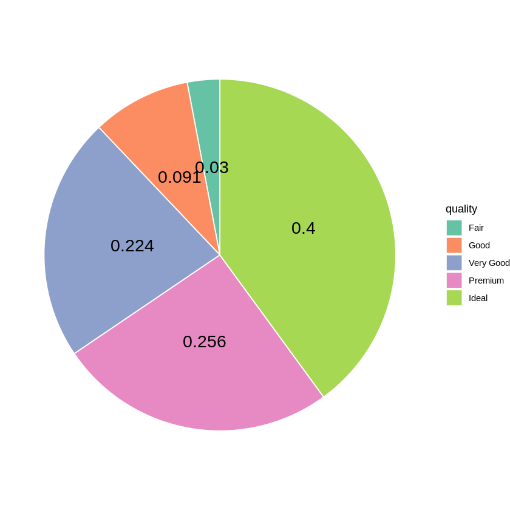
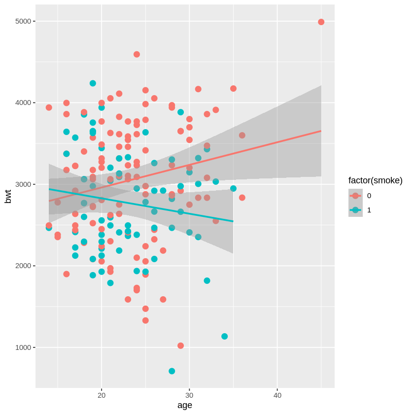

kids states ages
1 Jack CA 12
2 Jill MA 10
3 Jillian MA NA
4 John HI NA
5 Lillian <NA> 7
kids states ages
1 Jack CA 12
2 Jill MA 10
3 Jillian MA NA
4 John HI NA
kids states ages
1 Jack CA 12
2 Jill MA 10
3 Lillian <NA> 7
11. 데이터 시각화
11.1 데이터시각화란?
데이터나 정보를 그래프, 차트 혹은 또다른 시각적 형식을 통해 표현하는 것
데이터를 이미지와 연결시키는 일련의 방식
텍스트나 숫자보다 시각적인 이미지가 보다 직관적인 인지를 가능케 하고 강렬한 인상을 남김
다양한 시각화를 통해 데이터나 자료에 대한 다층적인 이해 가능
빅데이터 시대에 대용량의 데이터에 대한 효과적인 요약 가능
11.2 R Base graphics
R에 기본적으로 내장되어 있는 시각화도구
다양한 종류의 그래프 생성이 가능하며 매개변수(graphical parameter)의 조정을 통해 세부적인 그래프의 모양 및 내용을 조정할 수 있음
11.3 ggplot2 패키지
시각화를 위해 개발된 package로 Wilkilson에 의해 개발된 그래픽 문법(grammar of graphics)에 기초하고 있으며 현재는 R을 통한 데이터시각화의 표준이 되어가고 있음
독립적인 시각적 구성요소들을 정의하고 이를 다양한 방식으로 구성하는(쌓아올리는) 방식으로 그래프를 생성함
원시데이터를 나타내는 층(layer)를 먼저 정의하고 여기에 각종 주석이나 통계객체 등을 더해 나갈 수 있음
시각화 과정을 표준화함으로써 그래픽 문법에 어느 정도 익숙해지면 다양한 그래프를 자유자재로 그릴 수 있음
본 강의에서는 ggplot2의 활용을 중심으로 시각화를 통한 데이터의 요약을 학습할 것임
11.4 ggplot2 패키지에 사용되는 문법의 구성 요소 및 용어
data
시각화에 사용될 데이터를 정의
data.frame 형식
ggplot()에 정의
aesthetics
데이터의 시각적 표현양식 정의 (mapping)
x축, y축의 정의
color, size, shape 등을 정의
aes()에 정의
geometry
표현할 그림의 기하 객체
점, 선, 바 등등
geom_point(), geom_line(), geom_bar() 등등에 정의
stats
통계변환 혹은 데이터 요약
모든 기하 객체에는 그에 대응되는 통계변환이 존재
facets
격자형 그림 배치를 위한 그룹화
facet_grid()에 정의
scale
데이터와 aesthetics(color, size, shape) 사이의 mapping을 조정
보통 색깔을 조정하기 위해 사용됨
coordinates
좌표 정의
막대그래프 (범주형 자료)
보통 가로축에 범주, 세로축에 수치를 표시함. 이 때 수치에는 자료값, 도수, 상대도수 등이 포함됨
ggplot(diamonds, aes(cut)) +geom_bar()#ggplot(diamonds, aes(cut, fill = clarity)) + geom_bar() # cutting의 질에 대한 막대그래프, clarity 함께 표기#ggplot(diamonds, aes(cut, fill = clarity)) + geom_bar(position="dodge") # cutting의 질에 대한 막대그래프, clarity 함께 표기#ggplot(diamonds, aes(cut, fill = clarity)) + geom_bar(position="fill") # 상대도수 표기

원형그래프 (범주형 자료)
파이 모양의 원에 각 범주가 차지하는 비율을 부채꼴의 중심각 혹은 면적에 비례하도록 표현
coord_polar() 이용
ggplot(diamonds, aes(x="", fill = cut)) +geom_bar(width=2, color="white") +coord_polar("y", start=30) +scale_fill_brewer(palette="Set1")
Fair Good Very Good Premium Ideal
0.02984798 0.09095291 0.22398962 0.25567297 0.39953652
Var1 Freq
1 Fair 0.02984798
2 Good 0.09095291
3 Very Good 0.22398962
4 Premium 0.25567297
5 Ideal 0.39953652

##과제 G1##
mpg 데이터(ggplot2에 내장)는 1999년과 2008년에 생산된 자동차들의 연비에 대한 정보를 담고 있고. 234개의 관측치와 11개의 변수가 존재한다. 제조업체(manufacturer)에 대한 막대그래프 및 원형그래프를 그려 보아라. 막대그래프에 각 실린더 개수별(cyl) 차 유형(class)이 어떻게 구성되어 있는지를 살펴볼 수 있도록 표시하되 도수, 상대비율이 표시된 그래프를 각각 그려라.
str(mpg)ggplot(mpg, aes(cyl, fill = class)) +geom_bar(position="fill")table(mpg$cyl)
Warning message:
“dependency ‘Matrix’ is not available”
also installing the dependency ‘mgcv’
Warning message in install.packages("ggplot2"):
“installation of package ‘mgcv’ had non-zero exit status”
Warning message in install.packages("ggplot2"):
“installation of package ‘ggplot2’ had non-zero exit status”
Updating HTML index of packages in '.Library'
Making 'packages.html' ...
done
ERROR: Error in library(ggplot2): there is no package called ‘ggplot2’
Error in library(ggplot2): there is no package called ‘ggplot2’
Traceback:
1. library(ggplot2)
ERROR: Error in library(ggplot2): there is no package called ‘ggplot2’
Error in library(ggplot2): there is no package called ‘ggplot2’
Traceback:
1. library(ggplot2)
library(MASS)# 189명의 신생아의 체중과 저체중여부(2.5kg 미만), 산모의 여러 특성이 포함되어 있는 데이터ggplot(birthwt, aes(x=bwt)) +geom_histogram(fill="white", colour="black") +labs(title="Histogram of birthweight", x ="Birthweight(in gram)") +# 제목 및 축 이름 지정theme(plot.title =element_text(hjust =0.75, size=30)) # 제목 중앙 정렬ggplot(birthwt, aes(x=bwt)) +geom_histogram(binwidth=200,fill="white", colour="black") +labs(title="Histogram of birthweight", x ="Birthweight(in gram)") +# 제목 및 축 이름 지정theme(plot.title =element_text(hjust =0.5)) # 제목 중앙정렬
`stat_bin()` using `bins = 30`. Pick better value with `binwidth`.
고속연비(hwy)의 분포를 보기 위한 히스토그램을 그리고 density 곡선을 겹쳐서 그려보아라. 분포의 형태가 어떠한지 살펴 보아라. 엔진구동방식(drv)과 실린더 개수(cyl)에 따란 각각 고속연비의 분포를 보기 위한 히스토그램을 그리고 서로 비교하여 보시오. 적절한 상자그림을 그려 보시오.
산점도 (두 수치형 변수)
두 수치형 변수의 관측 순서쌍을 이차원 평면 상에 나타냄
한 변수의 변화에 따른 다른 변수의 변화 trend 등을 파악하기 좋음
geom_point() 이용
nrow(diamonds)N =nrow(diamonds) # 표본의 크기set.seed(1)diamonds1 = diamonds[sample(1:N,0.1*N),] # 전체 중 10%의 표본만을 추출 (간단히 그림을 그리기 위함)ggplot(diamonds1, aes(x=carat, y=price)) +geom_point() # 기본 산점도
ggplot(birthwt, aes(x=age, y=bwt,colour =factor(smoke))) +geom_point(size=3) +geom_smooth(method=lm)# stat_smooth(method=lm)로 선형추세선 표시. 일반적인 비선형추세선을 표시하고자 하는 경우 geom_smooth(method=loess)로 설정
`geom_smooth()` using formula = 'y ~ x'

선그래프
한 변수의 변화에 따른 다른 변수(수치형)의 변화를 선으로 연결하여 나타내는 그래프
x축에 표현되는 변수는 순서가 있는 범주형 변수도 가능하며, 연속형 변수더라도 몇 개의 이산적인 값을 취하는 경우를 보통 다룸.
x축에는 시간변수가 종종 사용됨
geom_line() 이용
install.packages("gapminder")library(gapminder)# 국가별 총생산, 기대수명 등에 대한 데이터library(dplyr)gap_LE <- gapminder %>%group_by(continent, year) %>%summarise(lifeExp=median(lifeExp))# 연도에 따른 대륙별 평균수명의 중앙값 계산print(head(gap_LE,20))
Installing package into ‘/usr/local/lib/R/site-library’
(as ‘lib’ is unspecified)
`summarise()` has grouped output by 'continent'. You can override using the
`.groups` argument.
# A tibble: 20 × 3
# Groups: continent [2]
continent year lifeExp
<fct> <int> <dbl>
1 Africa 1952 38.8
2 Africa 1957 40.6
3 Africa 1962 42.6
4 Africa 1967 44.7
5 Africa 1972 47.0
6 Africa 1977 49.3
7 Africa 1982 50.8
8 Africa 1987 51.6
9 Africa 1992 52.4
10 Africa 1997 52.8
11 Africa 2002 51.2
12 Africa 2007 52.9
13 Americas 1952 54.7
14 Americas 1957 56.1
15 Americas 1962 58.3
16 Americas 1967 60.5
17 Americas 1972 63.4
18 Americas 1977 66.4
19 Americas 1982 67.4
20 Americas 1987 69.5